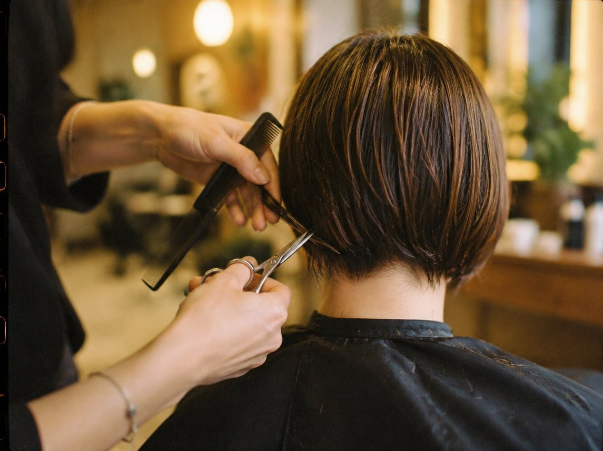
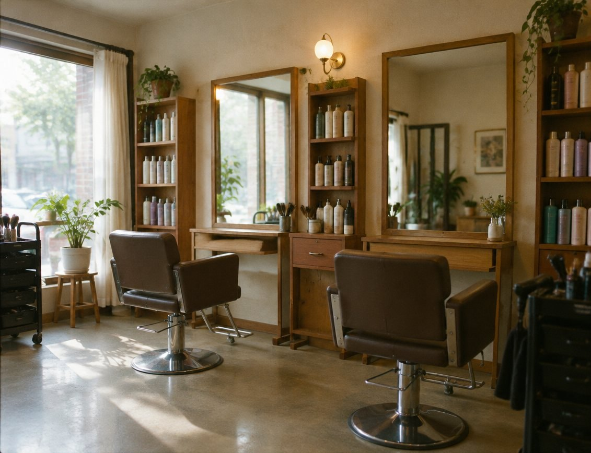
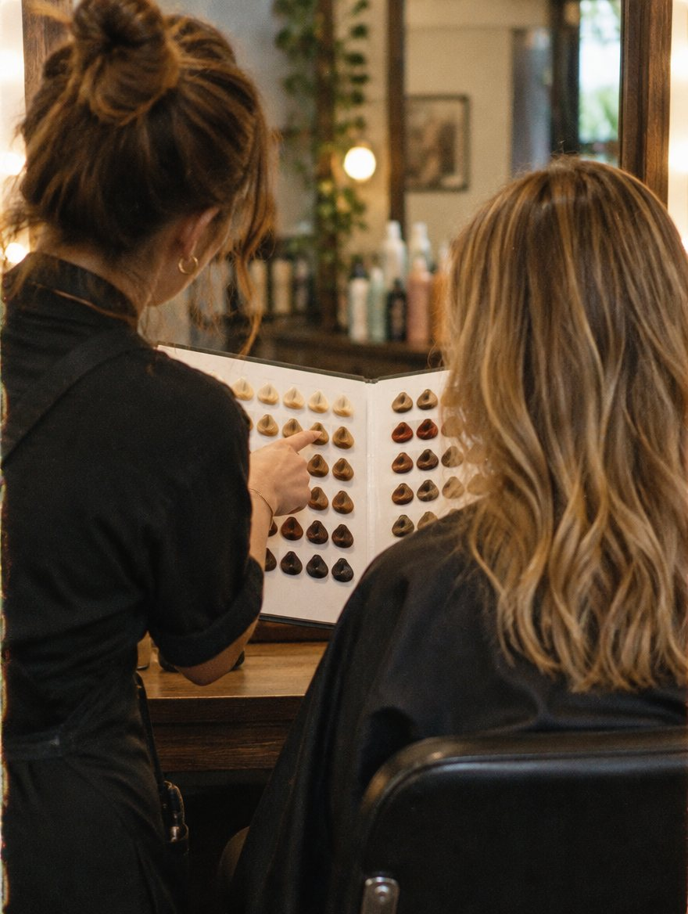
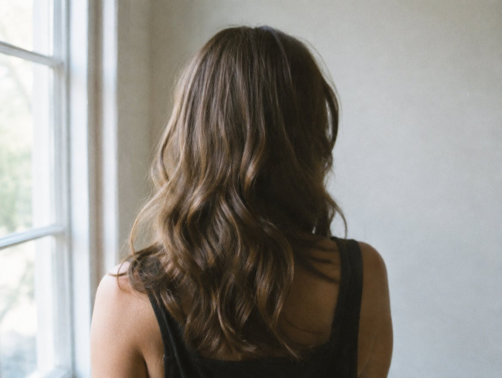
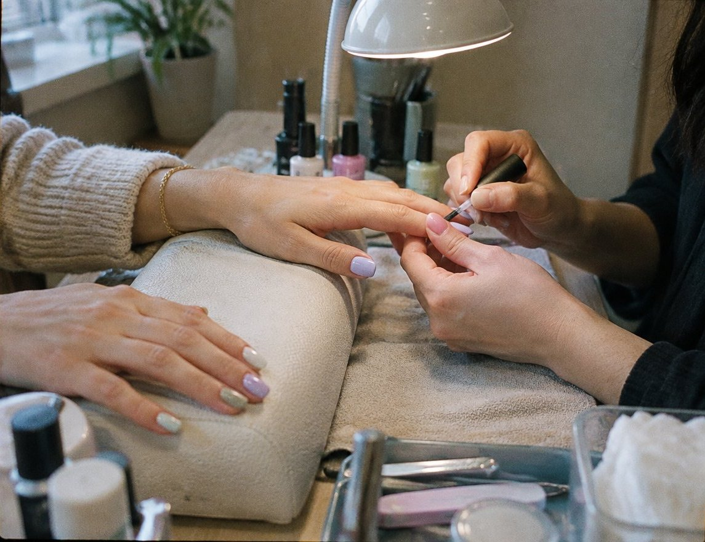
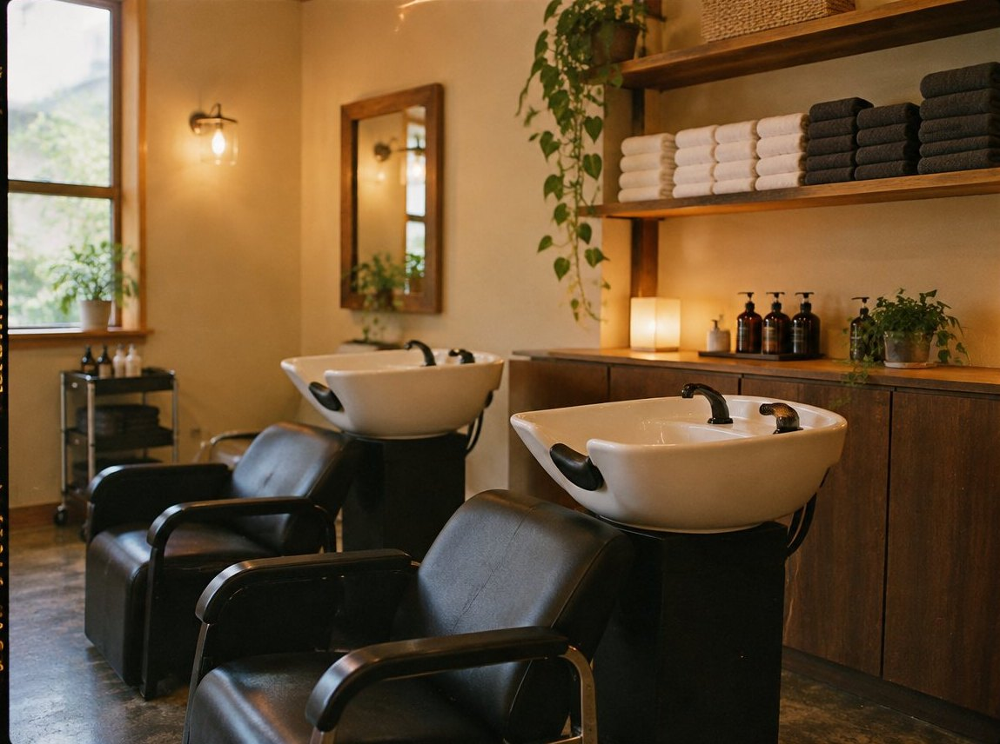

커트
모질과 가르마 방향을 보고 자릅니다. 말려서 한 번 더 다듬어 마무리합니다.


결헤어는 가위를 들기 전에 먼저 묻습니다. 아침에 머리 손질에 몇 분을 쓰시는지, 지난번 펌이 어디서부터 풀렸는지.
유행하는 스타일보다 내일 아침 혼자서도 같은 모양이 나오는 머리를 만드는 게 목표입니다.

모질과 가르마 방향을 보고 자릅니다. 말려서 한 번 더 다듬어 마무리합니다.

굵기와 위치를 사진으로 같이 정합니다. 손질 방법은 휴대폰으로 찍어 가실 수 있게 보여 드려요.

머리 시술을 기다리는 동안 같이 받으실 수 있습니다. 원컬러부터 간단한 아트까지.
원하는 스타일 사진과 평소 손질 습관을 여쭤봅니다.
중간중간 거울로 확인하며 진행합니다.
집에서 드라이하는 순서를 직접 보여 드립니다.
모양이 무너졌다면 가볍게 다시 잡아 드려요.

한 분씩 모셔서 예약 손님이 우선입니다. 빈 시간이 있으면 바로 해 드려요.
네이버 예약 화면에 시술별 가격이 올라가 있습니다. 기장 추가는 상담 때 먼저 말씀드려요.
초등학생까지 가능합니다. 보호자와 함께 와 주세요.
경기 수원시 팔달구 예시로 34, 2층 · 수원시청역 4번 출구 도보 5분
영업시간·휴무·가격은 네이버 플레이스에서 가장 최신으로 확인하실 수 있어요.
이런 홈페이지, 우리 가게도 만들 수 있어요
제작 신청하기